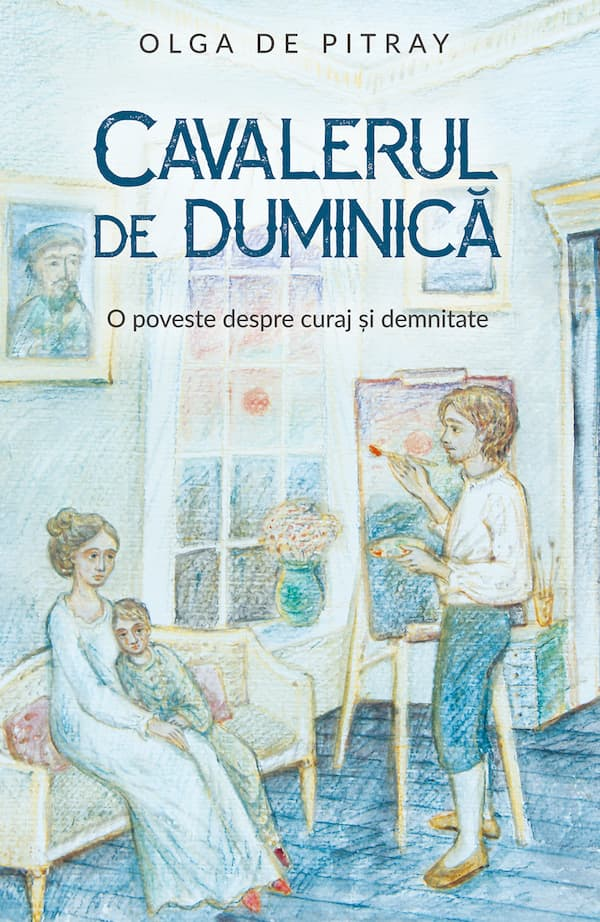
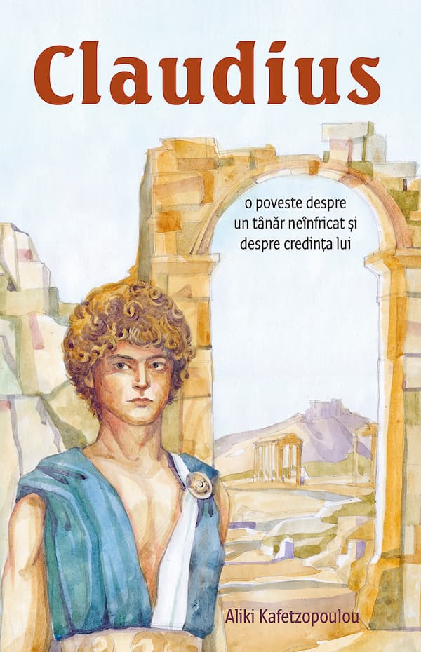

Este o temă foarte veche, în jurul căreia s-au format diverse tabere, formate din susținători fervenți, critici hotărâți și cei situați între acești poli. Titlul nu are în vedere o literatură moralistă, pentru că aceasta își ratează cel mai probabil de la început obiectivul din cauza stridențelor; avem însă în vedere literatura care se dorește continuarea modului de viață autentic moral, axat pe dorința sinceră de autocunoaștere în vederea unui parcurs luminos, chiar dacă acesta nu exclude automat căderea, trecerea prin zone tenebroase. Ne gândim la literatura inspirată deseori din viețile sfinților și eroilor, acolo unde viața bate filmul, iar biografia pare să ajungă la granița fabulosului, unde firul narativ se împletește cu firul normativ, făcând dintr-o poveste de viață un reper moral.
De unde interesul acum pentru acest subiect? Se poate răspunde în mai multe feluri. Pentru că ceea ce ține de comportamentul corect ne privește dintotdeauna pe toți, sau așa ar trebui să fie. Apoi, dacă ne referim la situația prezentă: pentru că există concurență serioasă din partea unei literaturi care nu doar că nu contribuie la înnobilarea tinerilor (ținta predilectă), ci chiar pătrunde pe tărâmul practicilor sataniste. Este vorba despre un curent în rapidă expansiune, cu mare priză la elevi, susținut de numeroasele și foarte mediatizatele producții cinematografice: literatura despre magie, fantome, vampiri, zombi, prin care copiii sunt inițiați în lumea ocultismului sub masca divertismentului, a culturii. Iată, deja de ani buni și pe plaiurile mioritice se „sărbătorește” cu voioșie stahanovistă Halloween-ul; cu vreo trei săptămâni înainte începe o mare agitație prin grădinițe, iar la eveniment sunt implicați toți membrii familiei – cei mari să facă rost de costume, cei mici să le poarte. Problema nu mai este că au apărut aici ca forme fără fond, problema este că entuziasmul preluării duce la crearea unui fond pentru aceste forme. Odată incluse în educația copiilor, ele devin repere ale copilăriei, ale vârstei de formare.
Ce se poate face în contextul dat? Ar trebui căutate sau create alternativele sănătoase, nu literatura moralistă, ci acea literatură de calitate ce poate oferi cu suficient talent accesul la cealaltă față a realității, în care bucuria de a trăi este compatibilă cu lupta pentru a fi mai bun, în care jertfirea unor comodități pentru binele semenilor este o condiție a păcii lăuntrice, a bucuriei depline și este o marcă a demnității umane. În care mila nu mai este considerată a fi sinonimă cu disprețul, după cum ne este prezentată în scenariile hollywoodiene, unde câte un personaj rostește scrâșnind din dinți: „Mi-e milă de tine!”. Desigur, denaturarea este strategia constantă a nefârtatelui, începând cu virtuțile creștine cardinale: credința devine încredere în sine și în cel mai bun caz în oameni sau în „univers”, nădejdea devine speranță că sau în… ceva, dragostea devine erotism, iubire de sine și de arginți în diverse forme.
Cărțile „de specialitate” pe teme de moralitate sunt evident în afara interesului celor mulți, fiind prea anoste pentru cititorii de zodiace și horoscop, ca și pentru cei interesați de dramele amoroase ori banalele scandaluri din lumea vedetelor. Însă chiar și beletristica are, din câte se pare, tot mai slabe șanse de a ajunge sub privirea omului de rând. Totuși, să nu dispere autorii, încă se mai găsesc persoane care vor să citească o carte bună, călăuzitoare precum un far. (Cu siguranță, foarte mulți sunt însetați după așa ceva, numai că se uită în direcția greșită).

Dintre cărțile bune ce împletesc strălucit firul narativ și cel normativ, amintesc două, traduse în anul 2022. Prima este Cavalerul de duminică (editura Predania), aparținând scriitoarei franceze Olga de Pitray, ultimul copil al celebrei Contese de Ségur. Traducătorul este profesorul Manuel Valeriu, cel care semnează și prefața, din care extragem câteva fraze: „Pledoaria pentru înălțarea spiritului, pentru iertare, recunoștință, îngăduință, filantropie, pentru descifrarea sensului vieții printr-o cheie creștină, apare la tot pasul. Parabolele neo-testamentare sunt parte integrantă a culturii autoarei, iar meritul ei este că le presară de-a lungul acțiunii într-un mod implicit, rămânând să le descopere cititorii acestei cărți vii, emoționante, înălțătoare și deosebit de actuale. (…) În veacul hipermaterialist al egoismului atotstăpânitor, apelul la umanitate nu este deloc desuet, ci dimpotrivă, îndeamnă la desfacerea carapacei omului contemporan, plină de solzii indiferenței și reificării”.
Cealaltă carte se intitulează Claudius (editura Sophia), având ca autoare pe Aliki Kafetzopoulou. Traducerea din limba greacă este realizată de protopresbiter dr. Gabriel Mândrilă. Această carte are meritul de a-l face pe cititor martor al unor evenimente din secolul III, zugrăvind cu mult talent o realitate îndepărtată temporal. Autoarea reface culorile ce aduc la viață lumea în care aceleași forțe ale binelui se luptă cu înverșunatele și aparent mai puternicele forțe opuse, într-o arenă cu un decor diferit de cel al zilelor noastre, însă ce devine ușor accesibil, pentru că nu exteriorul ne copleșește în primul rând, cât perenitatea luptei. Vom cita un alineat de pe ultima copertă: „Urmărind îndeaproape realitatea istorică, autoarea ne face părtași căutărilor unui tânăr a cărui viață ne demonstrează încă o dată că numai prin dobândirea lui Hristos și mai ales a credinței în El, ce învinge orice obstacol și stavilă, cerul se pogoară pe pământ spre a ne umple de o fericire și măreție copleșitoare…”.
Încă din subtitluri, cititorul este anunțat că va intra pe tărâmul moral prin poarta literaturii: Cavalerul de duminică are subtitlul „O poveste despre curaj și demnitate”; iar Claudius este „O poveste despre un tânăr neînfricat și despre credința lui”. O mai bună potrivire nu ar fi ieșit nici dacă autoarele, editorii și traducătorii s-ar fi înțeles între ei!
